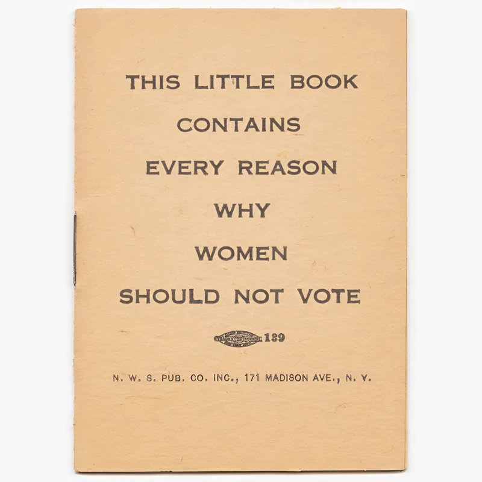
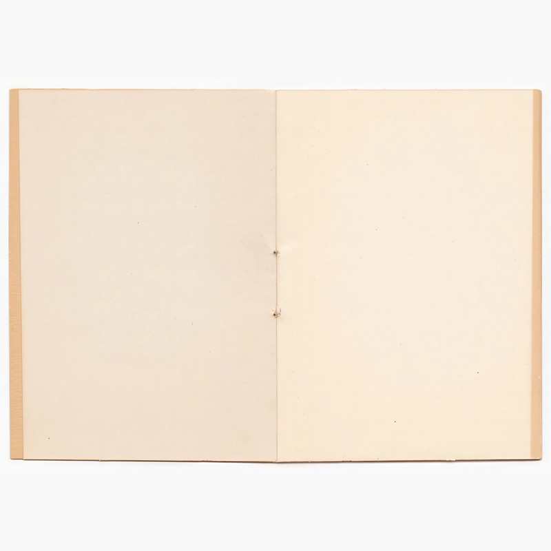

At the time of the 2016 US presidential election, stationery shops did a brisk trade in entirely blank books, with covers bearing such titles as The Wit and Wisdom of Donald Trump and Why Trump Deserves Trust, Respect and Admiration. A year later Michael J. Knowles topped the Amazon charts with his Reasons to Vote for Democrats, comprising 200 blank pages. It’s an old joke, as this precursor from 1880 shows, and this one from the same year. One of the finest examples of the genre, and at a welcome remove from the petty political-point-scoring mood of many others, is this tiny publication from circa 1917.
Despite its novelty angle, this little book from the National Woman Suffrage Publishing Company (the publishing arm of the National Woman Suffrage Association) was born from a very serious place: the struggle to gain women the right to vote in the United States. The N. W. S. A. published a range of agitprop, not just comedy items. Virginia Commonwealth University has a collection of texts from the New York-based organisation, including the Headquarters News Letter, an A-B-C of Organization, a guide to fundraising, and information brochures on the proposed changes to the Constitution. There are leaflets targeting specific audiences too: teachers, farmers’ wives, Catholics, Southern white women concerned about “the Negro Vote”. More general-audience books, such as Why Women Should Not Vote also found their way to specific targets. A copy was left on the desk of anti-women’s suffrage Rep. Sherman Berry who decried it as “another sample of … the detestable and cheap politics practiced in this State. Gentlemen, that little book carries no more weight with it than does the picketing of the White House in this time of crisis and peril to this nation and the heckling of our President....”
Two years on from the publication of the book (and presumably to Berry’s dismay) the legislative battle for women’s suffrage was won in 1919, with ratification of the 19th Amendment from the required number of states following in 1920: it was prohibited to deny citizens the right to vote on the basis of sex. It was a huge victory, but not the end of the struggle — many women were still, in practice, suppressed from voting. Fifty years earlier, the Fifteenth Amendment of 1870 prohibited the denial of the right to vote on the basis of race or colour, but suppression of the Black vote continued via the back door through such things as literacy tests, poll taxes, and grandfather clauses (in addition to more violent extralegal means). Such racist measures meant that, come ratification of the 19th Amendment in 1920, some 75% of Black women were still effectively disenfranchised, and they would continue to be so (along with many Black men) until the Civil Rights victories of the 1960s. (See Sharon Harley or Rosalyn Terborg-Penn for recent academic work on the contrasts and convergences of the women’s suffragette movement and that for racial equality.) Native American women too found themselves excluded from the enfranchisement of 1920 — an irony considering the huge influence that gender roles among the Iroquois acted upon N. W. S. A. co-founder Matilda Joslyn Gage. Although Native Americans were granted citizenship by an Act of Congress in 1924, state policies would not let them vote, and wouldn’t do so until 1957.